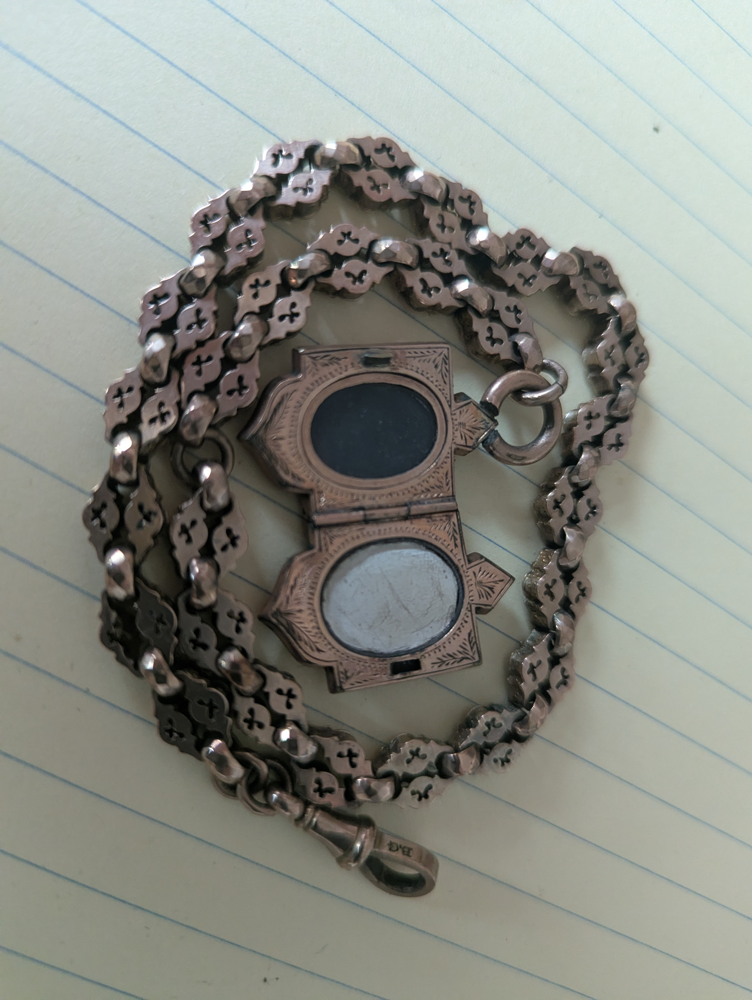
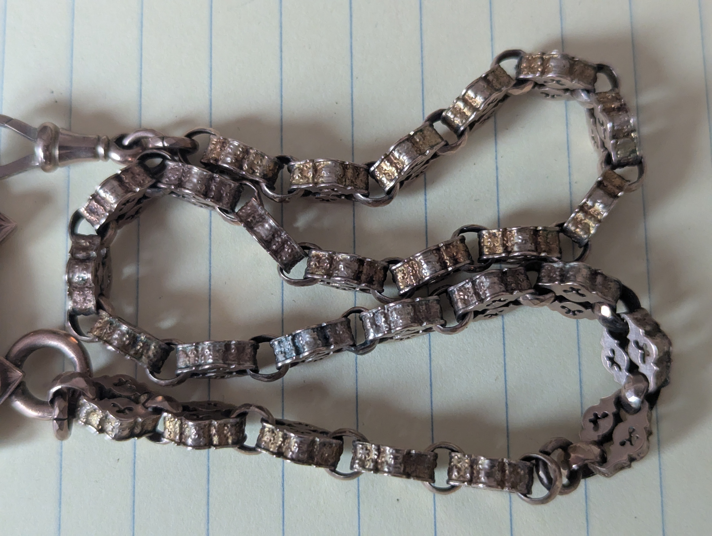
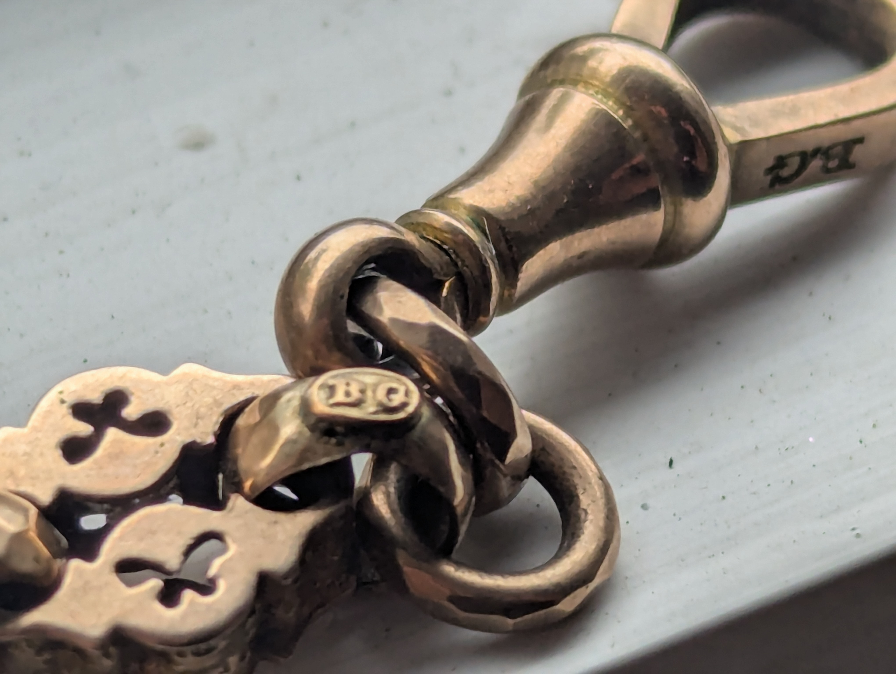
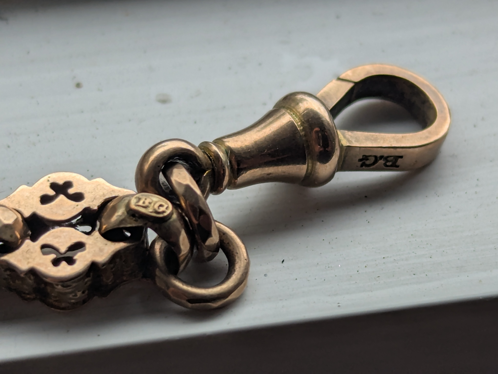
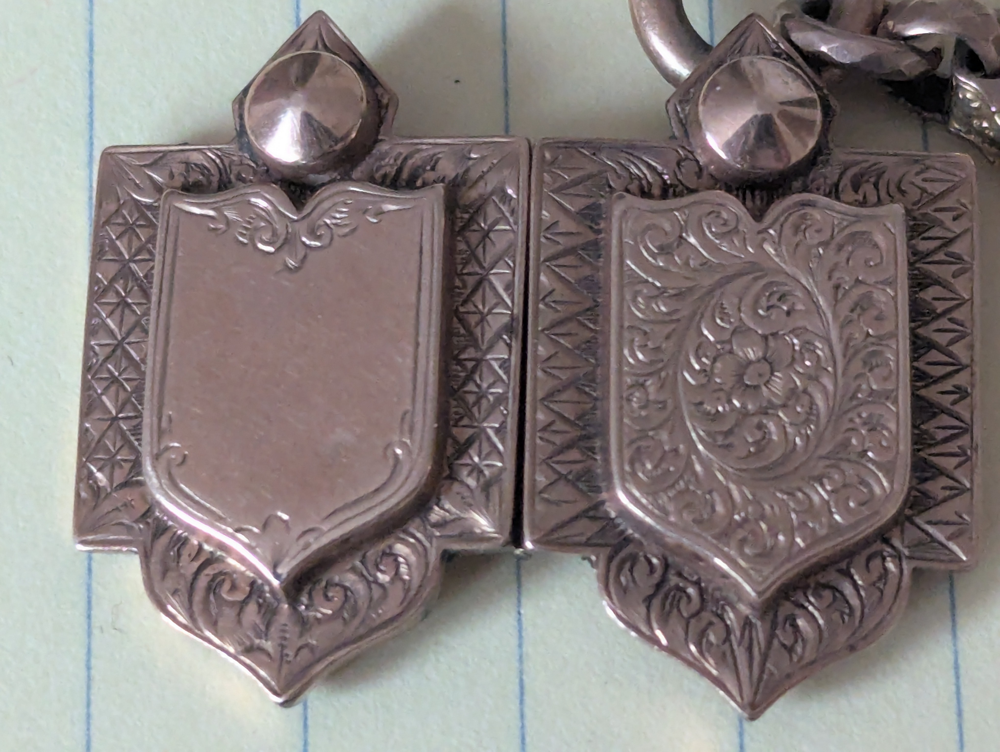
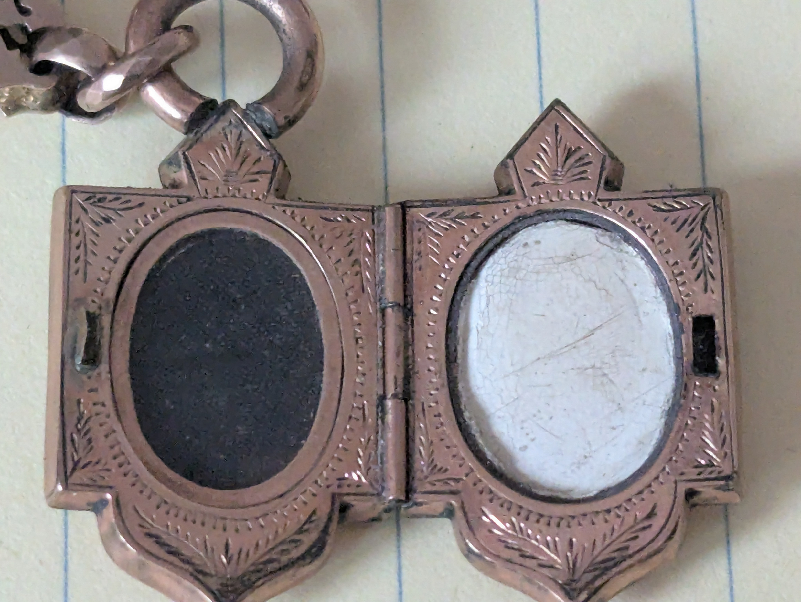

Omega Seamaster Automatic
Historical Context: Launched in the mid-1960s, this specific reference exemplifies the transition of Omega’s design house from rugged utility tools to refined, elegant daily wear dress-sports watches. The model contains a striking, pristine silver starburst dial configuration paired with fine onyx-inlaid indices.
The Caliber Heritage: Underneath the heavy steel architecture sits the highly celebrated, copper-plated Omega Caliber 565 in-house mechanical automatic movement. Known famously among fine watchmaker communities for its structural endurance, it features a unique pull-out quickset date utility mechanism that remains an exceptional marvel of engineering mechanics from that era.